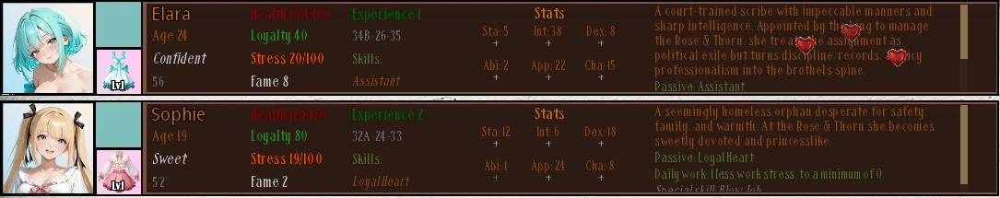
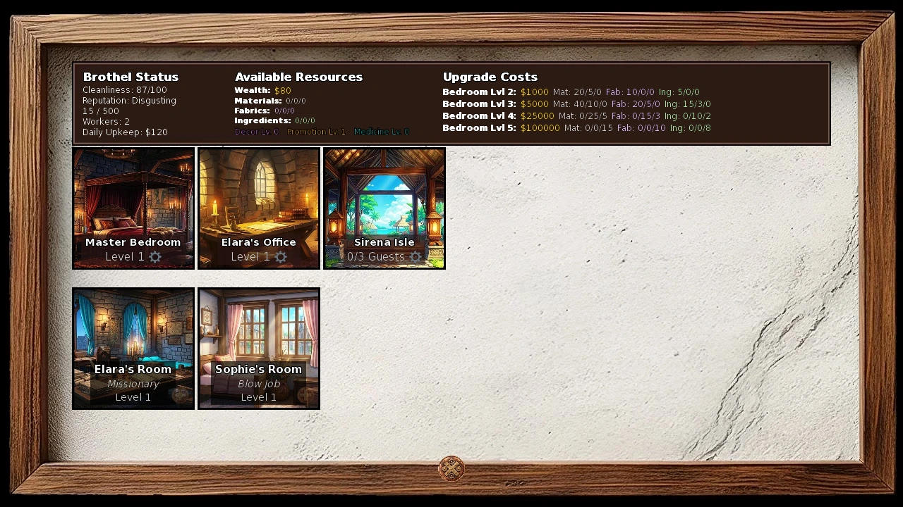
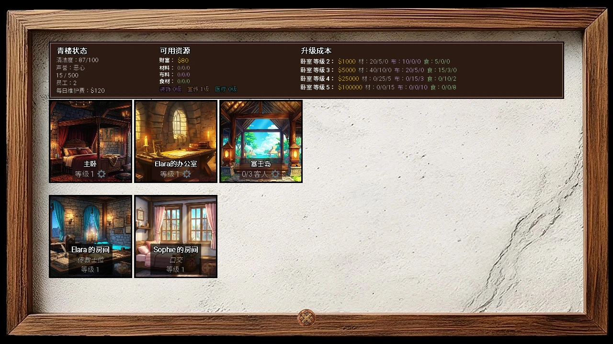

Select a screenshot to enlarge it. Screens show example inventories and progress.
Start running the Rose & Thorn
The Rose & Thorn is your business in Medieval → Kings Demesne. To gain ownership, follow the King’s early supply problem through Wilfred’s delivery, then return to the Throne Room between 10:00 and 16:59 for The Royal Appointment. Ownership opens Elara’s Office and the Master Bedroom and recruits Elara; it does not require buying the building for cash.
Enter Elara’s Office for Establishing Operations and choose Brothel or Hotel. This is a one-time business choice. The core staffing, bedrooms, income, cleaning and reputation systems are shared, while daily event pools, presentation and some checks differ. Hotel mode also does not offer Receive a Client. This guide uses the business’s name when the same instruction applies to both modes.
- Go to Worker Quarters → Manage Workers to check Stress, Health, Loyalty, equipment and spendable worker EXP.
- Open Manage Rooms for bedrooms, apprentice assignments and, later, vacations.
- Advance an in-game day, then choose Get Business Report in Elara’s Office. Read the completed day and collect pending earnings.
- Keep cleaning capacity ahead of new clients. Recruit maids, use sensible assignments, and manually clean if necessary.
This page covers access and daily decisions. Exact pay, reputation, cleaning and tax formulas are on Brothel Stats and Calculations.
A short daily management routine
| Status | What it means |
|---|---|
| Working | Ordinary clients, pay, work EXP, stress, Fame roll and mess |
| Resting / Sick | Does not work; the day rest finishes also earns no ordinary pay |
| Refused work | Possible below 30 Loyalty; worker-specific chance |
| Ballroom trainee | Replaces client work with training EXP; +10% business reputation, 15% normal-net fee |
| On vacation | No ordinary work; daily recovery and Loyalty buffer up to 150 |
Stress above 75 after work starts two rest days. If that did not trigger first, zero Health starts four sick days, or three with Willow active. Rest completion restores full Health and clears Stress, but work resumes on a later report. Loyalty below 30 can cause refusal; above 80 can trigger a personal bonus. Exactly 30 and exactly 80 do not cross those thresholds.
Check those states before assuming a room or income bonus failed. Working hours govern ordinary visits and private bookings; the business’s daily calculation does not run an hourly client simulation. Keep report collection regular: missing completed days use the current roster and assignments when calculated, rather than a historical snapshot.
The 30 workers and their passives
Recruitment is personal progression, not a shared hiring-price menu. Ava & Eva occupy one worker slot. The table gives route pointers and ordinary shift windows; the ending hour is exclusive and overnight shifts continue past midnight. Raven uses her own sessions rather than the ordinary visit selector.
Open the roster, shifts and recruitment pointers
| Worker | Ordinary shift | Innate passive | Where to progress |
|---|---|---|---|
| Elara | 10:00–18:00 | Assistant | The Royal Appointment |
| Sophie | 12:00–20:00 | Loyal Heart | Rescue in the Grand Bazaar back alley |
| Honey | 09:00–17:00 | Organizer | Rural Farm personal route |
| Sandra | 16:00–24:00 | Master Performer | Bards Guild personal route |
| Grace | 14:00–22:00 | Meditation | Grace and Sashina’s personal objectives; business rank 5+ |
| Cinnamon | 15:00–23:00 | Acrobatics | Complete her personal route and build her performance room; Menagerie needed |
| Raven | 18:00–02:00 | Dungeon Master | Dungeon Floor 20 encounter |
| Shadow | 20:00–04:00 | Pickpocket | Thieves Guild personal arrangement; faction reputation 120+ |
| Foxy | 19:00–03:00 | Fast Learner | Forest Clearing personal route |
| Bellavia | 21:00–04:00 | Sucking | Follow current personal Objectives |
| Valkyra | 13:00–21:00 | Bodyguard | Dungeon Floor 30 encounter |
| Lindia | 12:00–20:00 | Perfect Memory | Dungeon Floor 7 encounter |
| Ava & Eva | 12:00–24:00 | Natural Beauty | Entrance arrival with Vixen recruited and business rank 14+ |
| Gem | 14:00–18:00 | Mining | Complete Gem’s and Lyra’s linked objectives and Worker Quarters contract |
| Jade | 08:00–16:00 | Accountant | Dungeon trade or the separate back-alley opportunity |
| Pixie | 07:00–23:00 | Fast Learner | Complete her dungeon encounter route and later reunion |
| Brandy | 18:00–02:00 | Crowd Pleaser | Her recruitment H 2 H; business rank 8+ |
| Willow | 18:00–23:00 | Healer | Back-alley introduction and healing-partnership route |
| Vixen | 11:00–18:00 | Charming Personality | Personal partnership; business rank 10+ |
| Kasumi | 14:00–20:00 | Oracle | Personal route, starting at business rank 6 and continuing through 10 |
| A.R.I.A. | 20:00–04:00 | Adaptive Learning | Dungeon Floor 45 progression |
| Vespa | 19:00–01:00 | Queen | King’s Court objective chain, concluding at business rank 18+ |
| Audrey | 08:00–18:00 | Gardener | Dungeon Floor 35 encounter |
| Whiskers | 20:00–04:00 | Focused | Dungeon Floor 5 encounter |
| Ember | 21:00–03:00 | Resilient | Dungeon Floor 50 encounter |
| Momosagi | 08:00–22:00 | Insatiable | Dungeon personal scenario; player Taming 20+ |
| Sashimi | 15:00–17:00 | Siren Song | Pool personal route; Her Own Current |
| Maize | 09:00–17:00 | Heartbreaker | Fighters Guild bounty encounter from Floor 35 |
| Pepper | 00:00–24:00 | Bunny Hop | Easter reward and introduction |
| Ryia | 10:00–18:00 | Perfect Memory | Peasant Huts personal route and recruitment |
Innate work effects are small and specific: income passives add 5% personal pay; Fast Learner, Perfect Memory, Mining and Adaptive Learning add 1 work EXP; stress passives prevent 1 work stress; Master Performer, Acrobatics, Focused and Siren Song add 3 percentage points to double pay; Organizer/Gardener add 2 cleaning; Insatiable adds 1 client; Oracle/Queen add 1 daily reputation. The six service-role passives explain their room benefits, without adding a duplicate bonus. The calculation reference gives the exact order.
Poppy, Blinky, Sherry, Azariel, Esperanza and Muramasa are service hosts or residents, not extra ordinary worker entries. The six maids and captured monsters also use separate management systems.

Buy worker-bedroom upgrades
In Worker Quarters → Manage Rooms, use the upgrade button on the worker’s bedroom tile. Bedrooms start at 1 and cap at 5. Each row is the additional cost to reach that level. C/R/E = Common/Rare/Epic; Materials, Fabrics and Ingredients are separate resource payments. Bedroom purchases do not advance time.
| Target level | Gold | Materials | Fabrics | Ingredients | Pay maximum / daily reputation / clients |
|---|---|---|---|---|---|
| 2 | $1, 000 | 20 C+5 R | 10 C | 5 C | ×1.10 / +1 / +0 |
| 3 | $5, 000 | 40 C+10 R | 20 C+5 R | 15 C+3 R | ×1.25 / +3 / +1 |
| 4 | $25, 000 | 25 R+5 E | 15 R+3 E | 10 R+2 E | ×1.40 / +5 / +2 |
| 5 | $100, 000 | 15 E | 10 E | 8 E | ×1.60 / +7 / +3 |
These are the bonuses for the room’s current level, not bonuses to add together from every row. Reputation is a flat daily contribution, not permanent Fame. At level 5, all 30 bedrooms could contribute 210 daily reputation before business modifiers; only employees who actually work contribute their row’s daily reputation. Added clients also increase mess and usually work stress.
Specialty-room staffing is different: its effective level usually means unlocked base plus assigned apprentices. Do not look for the old paid specialty-room upgrade ladder. Upkeep includes $20 per counted room level, including all defined worker bedrooms; see the upkeep formula before expanding everything at once.

Assign apprentices and service rooms
Click a specialty tile in Manage Rooms, choose an available employee, and use Remove to free a slot. Most rooms allow three apprentices; the Ballroom allows one trainee. The worker must be active, unassigned elsewhere and not vacationing. Worker room masters—Elara, Raven, Valkyra, Willow and Vixen—cannot be apprentices. Ordinary apprentices still earn client income unless the room explicitly replaces work.
Room access, effects and tradeoffs
| Room | Access | Effect |
|---|---|---|
| Master Bedroom | Starting room | Assigned workers: +50% work EXP, no positive daily work/event stress |
| Elara’s Office | Starting room | +5% business income and reputation per apprentice |
| Maids Quarters | Acquire a maid | +10 team cleaning per apprentice |
| Infirmary | Recruit Willow | Willow active: base work stress 7, sickness 3 days; apprentices prevent incoming work stress |
| Security | Recruit Valkyra | Daily event chance +8 pp, +5 pp per apprentice, final chance capped 95% |
| Brothel Dungeon | Recruit Raven | Assigned apprentices cannot gain Stress or lose Loyalty; training stress 0 |
| Bar | Recruit Brandy; rank 8+ route | +5% business income/reputation and 10 mess; each apprentice +1%, +1 mess and +2 personal clients |
| Kitchen | Poppy’s arrival at rank 4+ | Each apprentice: one randomly distributed daily client; improves Room Service |
| Arcane Room | Blinky’s arrival at rank 7+ | +1 effective Decor per apprentice |
| Secret Room | Azariel’s special access | +1 work EXP per apprentice for every working employee |
| Menagerie | Gastoff commission; rank 9+ | +1 effective Promotion per apprentice |
| VIP Lounge | Recruit Vixen; rank 10+ route | Vixen and apprentices: +1 client, ×2 personal pay, ×2 mess |
| Esperanza’s Ballroom | The Art of Nobility; rank 7+, Esperanza Friend, Elara Known | One trainee: replacement EXP, +10% reputation, 15% normal-net fee |
| Training Room | Build room, then Muramasa’s A Wider Ring | 0/1–2/3 apprentices: player-stat gains 2–5/2–6/3–7; 2+ apprentices reduce time to 100 min |
Early Office staffing improves both income and reputation. Infirmary staffing is more valuable as the roster grows; Medicine improves prevention further. Master Bedroom protects against daily stress, while the Dungeon also protects training stress and Loyalty. VIP doubles mess, and a Ballroom trainee gives up ordinary earnings and charges a fee. Assignments can also raise upkeep, so choose for the problem you actually have.
Clothing levels and Fernando’s fittings
Workers start at clothing 1 and cap at 6. Clothing improves the daily pay range and adds 0/1/2/3/4/5 flat daily reputation at levels 1–6. The last level is a separate MAX Worker Clothing action at Fernando’s Tailor Shop, not the ordinary fitting.
Fernando’s Worker Clothing and MAX Worker Clothing share one fitting per day, available 06:00–20:59, taking 30 minutes. He randomly chooses an eligible active worker. Below level 5, each worker can receive at most two ordinary Fernando upgrades. A worker at level 5 can receive the final MAX fitting, even after those earlier fittings.
The ordinary global price ladder starts at $300 and 10/5/1 Common/Rare/Epic Fabrics, rising with every completed fitting and stopping at tier 50: $500, 000 and 250/150/99 Fabrics. MAX costs double the current tier, with minimums of $5, 000 and 100/50/25 Fabrics. MAX also advances that shared price counter. You cannot choose which eligible worker receives the random fitting.
The separate A Guest’s Thanks follow-up can raise an eligible working employee’s clothing for free, only through level 5. Check the Entrance after a report announces a grateful guest. It does not spend Fernando’s fitting or advance his cost ladder. The opportunity uses Charisma+Appearance in Brothel mode and Charisma+Intelligence in Hotel mode; it does not require the NTS booking setting.
All 50 fitting tiers and MAX quotes
The fabric columns are Common/Rare/Epic. The displayed next quote follows your total number of fittings, not that employee’s clothing level.
| Tier | Ordinary gold | Ordinary fabrics | MAX gold | MAX fabrics |
|---|---|---|---|---|
| 1 | $300 | 10/5/1 | $5, 000 | 100/50/25 |
| 2 | $350 | 15/7/2 | $5, 000 | 100/50/25 |
| 3 | $400 | 25/10/3 | $5, 000 | 100/50/25 |
| 4 | $500 | 32/13/4 | $5, 000 | 100/50/25 |
| 5 | $550 | 40/16/5 | $5, 000 | 100/50/25 |
| 6 | $600 | 46/20/6 | $5, 000 | 100/50/25 |
| 7 | $700 | 52/24/7 | $5, 000 | 104/50/25 |
| 8 | $900 | 58/27/8 | $5, 000 | 116/54/25 |
| 9 | $1, 000 | 64/31/9 | $5, 000 | 128/62/25 |
| 10 | $1, 200 | 70/35/10 | $5, 000 | 140/70/25 |
| 11 | $1, 400 | 76/39/12 | $5, 000 | 152/78/25 |
| 12 | $1, 600 | 82/43/14 | $5, 000 | 164/86/28 |
| 13 | $1, 800 | 88/47/16 | $5, 000 | 176/94/32 |
| 14 | $2, 100 | 94/51/18 | $5, 000 | 188/102/36 |
| 15 | $2, 500 | 100/55/20 | $5, 000 | 200/110/40 |
| 16 | $2, 900 | 106/59/23 | $5, 800 | 212/118/46 |
| 17 | $3, 400 | 112/63/26 | $6, 800 | 224/126/52 |
| 18 | $3, 900 | 118/67/29 | $7, 800 | 236/134/58 |
| 19 | $4, 600 | 124/71/32 | $9, 200 | 248/142/64 |
| 20 | $5, 300 | 130/75/35 | $10, 600 | 260/150/70 |
| 21 | $6, 200 | 136/79/38 | $12, 400 | 272/158/76 |
| 22 | $7, 200 | 142/83/41 | $14, 400 | 284/166/82 |
| 23 | $8, 400 | 148/87/44 | $16, 800 | 296/174/88 |
| 24 | $9, 800 | 154/91/47 | $19, 600 | 308/182/94 |
| 25 | $11, 400 | 160/95/50 | $22, 800 | 320/190/100 |
| 26 | $13, 200 | 165/98/53 | $26, 400 | 330/196/106 |
| 27 | $15, 400 | 170/101/56 | $30, 800 | 340/202/112 |
| 28 | $17, 900 | 175/104/59 | $35, 800 | 350/208/118 |
| 29 | $20, 800 | 180/107/62 | $41, 600 | 360/214/124 |
| 30 | $24, 200 | 185/110/65 | $48, 400 | 370/220/130 |
| 31 | $28, 200 | 189/113/68 | $56, 400 | 378/226/136 |
| 32 | $32, 800 | 193/116/71 | $65, 600 | 386/232/142 |
| 33 | $38, 100 | 197/119/74 | $76, 200 | 394/238/148 |
| 34 | $44, 400 | 201/122/77 | $88, 800 | 402/244/154 |
| 35 | $51, 600 | 205/125/80 | $103, 200 | 410/250/160 |
| 36 | $60, 000 | 209/127/82 | $120, 000 | 418/254/164 |
| 37 | $69, 900 | 213/129/84 | $139, 800 | 426/258/168 |
| 38 | $81, 300 | 217/131/86 | $162, 600 | 434/262/172 |
| 39 | $94, 600 | 221/133/88 | $189, 200 | 442/266/176 |
| 40 | $110, 000 | 225/135/90 | $220, 000 | 450/270/180 |
| 41 | $128, 000 | 228/137/91 | $256, 000 | 456/274/182 |
| 42 | $148, 900 | 231/139/92 | $297, 800 | 462/278/184 |
| 43 | $173, 300 | 234/141/93 | $346, 600 | 468/282/186 |
| 44 | $201, 600 | 237/143/94 | $403, 200 | 474/286/188 |
| 45 | $234, 500 | 240/145/95 | $469, 000 | 480/290/190 |
| 46 | $272, 900 | 242/146/96 | $545, 800 | 484/292/192 |
| 47 | $317, 500 | 244/147/97 | $635, 000 | 488/294/194 |
| 48 | $369, 400 | 246/148/98 | $738, 800 | 492/296/196 |
| 49 | $429, 800 | 248/149/99 | $859, 600 | 496/298/198 |
| 50 | $500, 000 | 250/150/99 | $1, 000, 000 | 500/300/198 |
Equip one worker item
Each worker has one equipment slot beside clothing in Manage Workers. Click the slot, select an owned item, and replace or remove it as needed. One copy cannot equip two workers. Removing or replacing equipment returns it to inventory and removes its equipped stat bonus. Gemstone Heels use the player’s consumable stock and return there when unequipped; equipping them does not destroy the copy.
Worker equipment reference
| Item | Equipped effect | Source or use |
|---|---|---|
| Lucky Charm | +5% personal income | Rose Arthur; $500 |
| Soothing Amulet | −3 work stress | Aziza; $650 |
| Training Manual | +50% work EXP | Illuminated Manuscript Room; $1, 000 |
| Floral Hairpin | +3 Charisma | Rose Arthur; $500 |
| Sturdy Boots | −2 work stress; +1 clients | Ben Arthur; $850 |
| Alluring Perfume | +10% personal income | VOID Consumer Fulfillment Center; $75, 000 |
| Client Magnet | +2 clients | Back-alley search; one-time reward |
| Silk Uniform | +5 Appearance; +5 Charisma | Moth Lady’s personal reward, population 15 M+ |
| Focus Crystal | +75% work EXP | Main-story progression with Blinky |
| Gemstone Heels | +10% personal income; +5 Fame while equipped | Ben Arthur: $2, 000, 2 Gems, 2 Epic Fabrics |
| Velvet Ribbon | +15% personal income; +3 Appearance | Christmas Claw Machine |
| Zen Pendant | −10 work stress; +1 daily reputation | Sylwithe’s Hollow; 7 Crystals |
| Golden Tongue Ring | +20% personal income; +2 clients | Noble Quarter heist; one-time reward |
| Bardic Lyre Pin | +10 Fame while equipped; +10 Charisma | Bards Guild quest reward |
| Crown of Devotion | −99 work stress; +25% work EXP; +1 daily reputation | If already owned, equip from worker inventory |
| Enchantress Tiara | +30% personal income; +3 clients; +10 Fame while equipped | Baba Yaga encounter reward |
| Sirena Vibes | Loyalty cannot decrease; +1 Loyalty per working day; Loyalty cap 150 | Shelly; 50 Sea Shells, repeatable |
| Pearl Necklace | +2 clients; ×2 personal income | Shelly; 120 Sea Shells, one purchase |
A “Fame+5/+10” equipment effect raises current Fame while equipped; it is not an extra permanent Fame gain every day. Income and EXP percentages use their own stages, while Pearl Necklace multiplies personal pay. Ordinary worker equipment does not need to be on the player to benefit its wearer.
Visits, Loyalty and training
Worker Quarters → Visit Worker lists active workers on shift who are not resting, vacationing or already visited that day. There is one ordinary visit per worker per day. Elara first needs After Hours with the Manager; Bellavia follows her current personal access progress. Raven is handled separately.
Entering a visit costs 60 minutes, 60 Energy and 40 Calm. Active Time, Power and Focus potions independently reduce those to 30 minutes, 30 Energy and 20 Calm, respectively. Entry commits the visit; leaving without using a session action still consumes the day’s visit. Talk, Praise, Gift and Training are each usable once inside that session.
Talk and Praise can each give a 5% special Loyalty result, a further 25% ordinary +1 result, or no direct Loyalty. Gifts follow the worker’s preferences. Session points are separate from NPC relationship points; leaving with 18–96/97–175/176–255/256+ session points grants 1/2/3/4 Loyalty, plus 1 with Trust Building. Below 18 grants none.
Training starts with Kissing and unlocks the next step after a completed training, up to eight steps. Kissing, Oral, Missionary, Cowgirl, Doggie and Special 1 raise one primary stat by 1: respectively Charisma, Intelligence, Appearance, Stamina, Ability and Dexterity; Special 2/3 each raise two distinct random primaries by 1. Training gives the player 50 Erotic Experience and worker EXP scaled by the player’s resulting experience tier. It normally adds 20 worker Stress, or 10 with Tantric Arts; overflow beyond 100 costs 2 Health per excess point. Dungeon apprentices take no training stress.
Visit and training efficiency
Intimate Communication improves Talk; worker Charisma improves Praise. Tantric Arts adds 10 base training EXP as well as reducing stress; Sensual Mastery multiplies that base by 1.5, then the result keeps 80%, with truncation. A completed matching gift upgrade then doubles it. Emotional Bonding improves training session points, Pleasure Arts adds one random primary point, and Trust Building improves a positive exit Loyalty reward.
For a lighter daily option, use the employee’s personal encouragement action when she is present in the business: 20 minutes, once per day, +1 Loyalty up to 100 and +1 base relationship point. It is a separate action from an ordinary visit. Above 100 Loyalty is preserved rather than lowered by the ordinary gain.
Optional gift and Raven-session reference
Ordinary visit-gift preferences
Favorite / normal / least-favorite gifts give 15/8/3 session points, 4–8/2–6/1–3 Loyalty while below 100, and 8/5/3 base NPC relationship points. A gift is consumed. This is the ordinary worker-visit preference list, not every other personal gift action.
| Worker | Favorite | Least favorite |
|---|---|---|
| Elara | Book | Teddy |
| Sophie | Teddy | Wine |
| Honey | Flowers | Jewelry |
| Sandra | Wine | Book |
| Grace | Book | Lingerie |
| Cinnamon | Chocolate | Wine |
| Shadow | Jewelry | Flowers |
| Foxy | Toy | Perfume |
| Bellavia | Book | Wine |
| Valkyra | Wine | Chocolate |
| Lindia | Book | Wine |
| Ava & Eva | Jewelry | Book |
| Gem | Gemstone Heels | Flowers |
| Jade | Jewelry | Toy |
| Pixie | Wine / Chocolate | Perfume |
| Brandy | Wine | Book |
| Willow | Flowers | Jewelry |
| Vixen | Jewelry | Teddy |
| Kasumi | Flowers | Wine |
| A.R.I.A. | Teddy | Book |
| Vespa | Jewelry | Flowers / Chocolate |
| Audrey | Perfume | Teddy |
| Whiskers | Toy | Book |
| Ember | Gemstone Heels | Chocolate |
| Momosagi | Lingerie | Book |
| Sashimi | Jewelry | Gemstone Heels |
| Maize | Chocolate | Book |
| Pepper | Chocolate | Book |
| Ryia | Book | Teddy |
Consumables as worker gifts
These use the session’s one Gift action and consume one item instead of activating its player buff. Effects target the worker:
| Consumable | Worker effect |
|---|---|
| Time | +1 Dexterity |
| Antidote | Full worker Health and Stress 0 |
| Power | +1 Stamina |
| Shield | +1 Loyalty within the ordinary limit |
| Focus | +1 Intelligence |
| Desire | +1 Ability |
| Cologne | +1 Appearance |
| Luck | +1 random primary stat |
Raven’s separate Dungeon sessions
The six image-session actions need paid access, Raven recruited and not vacationing, plus the listed relationship stage. Their exact action windows are 18:00–22:59 and 00:00–02:59; 23:00–23:59 is outside those two windows. Each takes 30 minutes and can repeat while requirements and resources permit. Rewards below are worker EXP / direct NPC relationship / player Erotic Experience.
| Action | Stage | Health and Energy cost, each | Rewards |
|---|---|---|---|
| Under Her Boot | Known | 10 | 2 / 5 / 15 |
| Controlled Descent | Acquaintance | 20 | 4 / 10 / 25 |
| Testing Limits | Friend | 30 | 6 / 20 / 35 |
| Whip Training | Close Friend | 40 | 8 / 30 / 45 |
| Deep Submission | Crush | 50 | 10 / 40 / 55 |
| Ultimate Control | Romantic | 60 | 12 / 50 / 60 |
Her separate Get Punished action requires 1000 relationship points, takes 45 minutes and 60 Energy, and is limited to once per day. It gives 15 worker EXP, 40 base relationship points and 80 player Erotic Experience, subject to its personal presence and content requirements.
Permanent gift-training upgrades
There are 66 completed one-time upgrades across 29 workers; Raven has no ordinary gift-training upgrade. Be In Love, finish the worker’s relevant personal prerequisites, keep her off vacation, and carry the matching crafted gift. The named action appears at its specified location and time. It consumes one gift and permanently upgrades that training.
A matching upgraded training gives ×2 worker EXP. Every completed upgrade for that employee also adds +50% daily personal income, summed before multiplying: one/two/three upgrades give×1.5/×2/×2.5, not repeated×1.5 compounding. This income bonus is independent of which training you select on later visits.
Craft the six gifts
| Gift | Crafter | Cost |
|---|---|---|
| Void-Kissed Charm | Sabbath | 3 Void-Touched Fangs +5 Abyssal Eyes +2 Soul Threads |
| Golden Pulse Bracelet | Rose Arthur | 5 Gilded Hearts +2 Mutagenic Ichors +3 Shimmering Heartscales |
| Abyssal Looking Glass | Silas | 5 Abyssal Eyes +2 Shimmering Heartscales +3 Soul Threads |
| Moonfang Leather Choker | Ben Arthur | 4 Void-Touched Fangs +4 Mutagenic Ichors +5 Leather |
| Hexbound Rose Sachet | Rose Arthur | 3 Void-Touched Fangs +4 Mutagenic Ichors +3 Soul Threads |
| Prismatic Spell Brooch | Aziza | 2 Soul Threads +4 Shimmering Heartscales +4 Gilded Hearts |
The materials are Infinity Dungeon trophies, plus Leather for the choker. Crafting adds no time charge and allows up to 999 trades per crafter action per day, provided you have the materials. Crafters use their normal location schedules. Each gift is used 11 times in the complete 66-upgrade set.
Full 66-upgrade location and gift checklist
The table is an access checklist, with no scene outcomes. Hours describe the action window; personal plot and NPC-presence conditions may narrow it further. Follow the worker’s current Objectives if the action is still absent despite having the gift and relationship stage.
| Worker | Action | Location | Hours | Training improved | Gift consumed |
|---|---|---|---|---|---|
| Elara | A Gift Without Obligation | Elara's Office | Any time | Cowgirl | Void-Kissed Charm |
| Elara | What the Ledgers Leave Out | Elara's Office | Any time | Oral | Golden Pulse Bracelet |
| Sophie | The Woman in the Glass | Central Plaza | Any time | Cowgirl | Abyssal Looking Glass |
| Sophie | Mine to Give | Worker Quarters | Any time | Oral | Moonfang Leather Choker |
| Sophie | Nothing Left to Hide | Courtyard | Any time | Special 3 | Hexbound Rose Sachet |
| Honey | All My Colors | Rural Farm | Any time | Cowgirl | Prismatic Spell Brooch |
| Honey | The Open Gate | Garden | Any time | Missionary | Void-Kissed Charm |
| Honey | Plain Words | Barn Interior | Any time | Oral | Golden Pulse Bracelet |
| Sandra | The Woman Between Notes | Bards Guild | Any time | Cowgirl | Abyssal Looking Glass |
| Sandra | No Encore | The Bar | Any time | Oral | Moonfang Leather Choker |
| Grace | My Turn to Guide | Worker Quarters | Any time | Cowgirl | Hexbound Rose Sachet |
| Grace | Shared Luminescence | Garden | Any time | Oral | Prismatic Spell Brooch |
| Cinnamon | No Audience Required | Cinnamon's Room | 06:00–23:00 | Oral | Hexbound Rose Sachet |
| Cinnamon | The Landing Between Us | Cinnamon's Room | 06:00–23:00 | Missionary | Golden Pulse Bracelet |
| Shadow | No Contingency | Thieves Guild | Any time | Cowgirl | Void-Kissed Charm |
| Shadow | No Leverage | Back Alleys | Any time | Oral | Golden Pulse Bracelet |
| Foxy | One Whole Reflection | Ancient Earth Shrine | Any time | Missionary | Abyssal Looking Glass |
| Foxy | Home Is Not a Leash | Forest Clearing | Any time | Oral | Moonfang Leather Choker |
| Bellavia | After the Hunger | Cellar | Any time | Cowgirl | Hexbound Rose Sachet |
| Bellavia | Every Era After | Cellar | Any time | Missionary | Prismatic Spell Brooch |
| Valkyra | No One's Weapon | Security Office | Any time | Cowgirl | Void-Kissed Charm |
| Valkyra | Before Thought | Security Office | Any time | Oral | Golden Pulse Bracelet |
| Lindia | No Correct Answer | Training Room | 09:00–18:00 | Oral | Void-Kissed Charm |
| Lindia | An Unwritten Method | Training Room | 09:00–18:00 | Special 1 | Prismatic Spell Brooch |
| Ava and Eva | Known Apart | Massage Room | 12:00–24:00 | Cowgirl | Abyssal Looking Glass |
| Ava and Eva | Ours on Purpose | Massage Room | 12:00–24:00 | Oral | Moonfang Leather Choker |
| Gem | Nothing to Prove | Mountain Foothills | 07:00–17:00 | Missionary | Hexbound Rose Sachet |
| Gem | Listen Close | Mountain Foothills | 07:00–17:00 | Oral | Prismatic Spell Brooch |
| Gem | Full Weight | Mountain Foothills | 07:00–17:00 | Special 1 | Void-Kissed Charm |
| Jade | An Unbalanced Equation | Master Bedroom | 09:00–14:00 | Cowgirl | Golden Pulse Bracelet |
| Jade | Beyond Appraisal | Master Bedroom | 09:00–14:00 | Kissing | Abyssal Looking Glass |
| Jade | The Terms Are Mine | Master Bedroom | 09:00–14:00 | Oral | Moonfang Leather Choker |
| Pixie | What Her Wings Say | Pixie's Room | Any time | Doggie | Golden Pulse Bracelet |
| Pixie | Adventure Enough | Pixie's Room | Any time | Special 2 | Prismatic Spell Brooch |
| Pixie | The Terms of Her Yes | Pixie's Room | Any time | Oral | Moonfang Leather Choker |
| Brandy | After the Last Toast | Rowdy Alehouse | 22:00–24:00; 00:00–03:00 | Cowgirl | Hexbound Rose Sachet |
| Brandy | Every Color Is Mine | The Bar | 17:00–22:00 | Oral | Prismatic Spell Brooch |
| Willow | Permission to Live | Nurse's Room | 09:00–16:00 | Cowgirl | Void-Kissed Charm |
| Willow | No Treatment Required | Nurse's Room | 09:00–16:00 | Oral | Golden Pulse Bracelet |
| Vixen | What I Kept | VIP Lounge | 11:00–20:00 | Doggie | Abyssal Looking Glass |
| Vixen | Ask Me Plainly | VIP Lounge | 11:00–20:00 | Oral | Moonfang Leather Choker |
| Kasumi | No Instructions Required | The Bar | 15:00–18:00 | Cowgirl | Hexbound Rose Sachet |
| Kasumi | The Future Can Wait | The Bar | 15:00–18:00 | Oral | Prismatic Spell Brooch |
| A.R.I.A. | What the Locks Could Not Own | Calibration Room | 11:00–18:00 | Doggie | Void-Kissed Charm |
| A.R.I.A. | A Pulse She Authored | Calibration Room | 11:00–18:00 | Oral | Golden Pulse Bracelet |
| Vespa | No Witness Required | Vespa's Room | 09:00–14:00; 20:00–24:00 | Missionary | Abyssal Looking Glass |
| Vespa | A Bow Without a Throne | Vespa's Room | 09:00–14:00; 20:00–24:00 | Oral | Moonfang Leather Choker |
| Audrey | Roots That Can Leave | Garden | 08:00–18:00 | Cowgirl | Hexbound Rose Sachet |
| Audrey | One Light, Every Color | Garden | 08:00–18:00 | Oral | Prismatic Spell Brooch |
| Audrey | The Shape in the Dark | Garden | 08:00–18:00 | Doggie | Void-Kissed Charm |
| Whiskers | The High Ground Is Hers | Whiskers' Room | 00:00–10:00; 16:00–18:00; 20:00–24:00 | Cowgirl | Golden Pulse Bracelet |
| Whiskers | The Shape Is Hers | Whiskers' Room | 00:00–10:00; 16:00–18:00; 20:00–24:00 | Missionary | Abyssal Looking Glass |
| Whiskers | What She Looks Back For | Whiskers' Room | 00:00–10:00; 16:00–18:00; 20:00–24:00 | Special 3 | Void-Kissed Charm |
| Ember | No Throne Requires This | Ember's Lair | Any time | Oral | Moonfang Leather Choker |
| Ember | The Gate She Opens | Ember's Lair | Any time | Doggie | Prismatic Spell Brooch |
| Momosagi | One Heart, Two Voices | Master Bedroom | 21:00–23:00 | Cowgirl | Golden Pulse Bracelet |
| Momosagi | A Name She Gives You | Master Bedroom | 21:00–23:00 | Oral | Abyssal Looking Glass |
| Sashimi | No Debt in the Current | Pool | 15:00–17:00 | Oral | Hexbound Rose Sachet |
| Sashimi | The Woman in Every Tide | Pool | 15:00–17:00 | Cowgirl | Abyssal Looking Glass |
| Maize | The Strength to Be Held | Brothel Dungeon | 09:00–17:00 | Cowgirl | Moonfang Leather Choker |
| Maize | Every Part of Maize | Brothel Dungeon | 09:00–17:00 | Oral | Hexbound Rose Sachet |
| Pepper | The Things Pepper Knows | Master Bedroom | 05:00–09:00 | Doggie | Prismatic Spell Brooch |
| Pepper | The Life Pepper Chose | Master Bedroom | 05:00–09:00 | Oral | Void-Kissed Charm |
| Ryia | The Woman in Her Own Story | Ryia's Room | 08:00–18:00 | Special 3 | Abyssal Looking Glass |
| Ryia | No Footnote Needed | Ryia's Room | 08:00–18:00 | Cowgirl | Moonfang Leather Choker |
| Ryia | A Pleasure Entirely Hers | Ryia's Room | 08:00–18:00 | Special 1 | Hexbound Rose Sachet |
Construction, Promotion and Decor
Gastoff’s commissions at the Blacksmith are separate from bedroom upgrades. Each is a one-time payment; the completed project opens immediately. In the table, C/R/E quantities must be paid separately in each of Materials, Fabrics and Ingredients. Cell 1 comes with the corridor and is reserved for Bobo; the six capturable monsters can fill cells 2–7.
All available business commissions
| Project | Gold | Minutes | Each resource: C/R/E | Business rank | Other requirement |
|---|---|---|---|---|---|
| Courtyard | 30, 000 | 180 | 0/0/10 | 5+ | — |
| Pool | 200, 000 | 180 | 0/0/25 | 6+ | Courtyard |
| Menagerie | 2, 000, 000 | 200 | 0/0/50 | 9+ | Courtyard |
| Training Room | 10, 000, 000 | 240 | 500/200/75 | 9+ | — |
| Cell Corridor + Cell 1 | 1, 000, 000 | 180 | 0/35/0 | 8+ | Raven active worker; Paid content |
| Cell 2 | 1, 500, 000 | 180 | 0/50/0 | 8+ | Cell Corridor; Paid content |
| Cell 3 | 2, 000, 000 | 180 | 0/0/25 | 8+ | Cell 2; Paid content |
| Cell 4 | 2, 500, 000 | 180 | 0/0/30 | 8+ | Cell 3; Paid content |
| Cell 5 | 3, 000, 000 | 180 | 0/0/35 | 8+ | Cell 4; Paid content |
| Cell 6 | 3, 500, 000 | 180 | 0/0/40 | 8+ | Cell 5; Paid content |
| Cell 7 | 4, 000, 000 | 180 | 0/0/45 | 8+ | Cell 6; Paid content |
Courtyard, Pool, Menagerie and Training Room each add 1 stored Decor. Effective Decor also includes equipped maid bonuses, Arcane apprentices and an owned Cthulhu’s Head. It rolls separate 0–5×level% bonuses for building income and reputation. It starts at 0.
Promotion starts at 1. Above 1 it gives a building-wide 0–level extra-client pool and a separate 0–10×level% reputation roll. Menagerie apprentices, equipment and specified recruitment rewards add to it; an active Vespa and an owned Cthulhu’s Head also add 1 effective level each. These paid promotions are one-time +1 sources:
Town promotion actions
| Action | Payment and condition |
|---|---|
| Kalb: Ask Kalb to Spread the Word | $500; Sophie recruited; Kalb Friend |
| Aziza: Ask Aziza to Spread the Word | $500; Aziza Close Friend |
| King: Request Royal Proclamation | $2, 000; business reputation 2+ |
| Silas: Ask Silas to Spread the Word | $1, 000; Jade active |
| Arestes: Request Guild Protection | $10, 000; Thieves Guild reputation 180+ |
| Vespa: Letter of Introduction | 30 min, 3 Crystals; Close Friend; one-time |
The built Training Room offers player Strength, Stamina, Ability or Mystic training for $80, 000, 50 Energy and 50 Calm per session. Base time is 120 min, dropping to 100 min with at least 2 apprentices; gains are 2–5 without apprentices, 2–6 with 1–2, 3–7 with 3. Building permits basic training; assigning its apprentices additionally needs Muramasa’s completed A Wider Ring recruitment.
Willow’s Medicine progression
After Willow joins, her Infirmary supports the whole roster. Ten special ingredient hand-ins each add 1 permanent business Medicine level. Carry the found ingredient and use its personal follow-up with Willow; finding it alone is not the level-up. Medicine strengthens Infirmary apprentices’ work-stress prevention, rather than improving every medicine consumable.
Ten ingredient sources
| Ingredient | Source / condition |
|---|---|
| Silvervein Moss | Present Mountain hike; 1% |
| Hushbell Seeds | Mary Ann’s Butterfly Pavilion personal follow-up |
| Emberlace Root | Haunted Mansion Greenhouse; Halloween access |
| Cloudmilk Spores | Explore Back Alleys; 1% |
| Tideglass Kelp | Future Surplus Distribution Scavenge; 1% |
| Velvetwake Buds | Venus Flytrap regular enemy drop; 1%, distinct from the boss |
| Rainheart Cuttings | Audrey’s Garden follow-up at In Love |
| Stillthorn Sprig | Forage Ingredients at Hunting Grounds; 1% |
| Dawnthread Saffron | Noble Quarter Break & Enter departure; 1% |
| Memorymint Runners | Terra’s Plant Dome personal follow-up |
Use Willow’s guide for the personal hand-in sequence and Haunted Mansion for the seasonal Greenhouse. Infirmary apprentices guarantee at least 1 prevented incoming work-stress point each; Medicine gives further per-point rolls. It does not erase existing Stress.
Cell Corridor and captured monsters
After business rank 8 and Raven’s recruitment, commission the Cell Corridor and at least Cell 2. Bobo joins through her own dungeon scenario chain and uses Cell 1. Jelly, Myriss, Arachne, Melanthe, Bessie and Daphne are recruited from their corresponding normal-dungeon enemies. Infinity fights do not advance these capture counters.
The first five defeats of each species do not roll capture; later defeats use a rising chance plus raw player Taming, capped at 100%. The sixth defeat begins at 20%+Taming, then rises 10 percentage points per additional defeat. A successful surrender still needs a free built cell; otherwise she leaves. You may choose whether to recruit when offered.
| Monster | Route | Starting Tamed | Food per Feed | Daily Tamed loss |
|---|---|---|---|---|
| Bobo | Scripted dungeon route | 50 | 3 | 5 |
| Jelly | Regular Jelly encounters | 70 | 2 | 3 |
| Myriss | Regular Dark Elf Warrior encounters | 30 | 5 | 6 |
| Arachne | Regular Arachne encounters | 35 | 5 | 6 |
| Melanthe | Regular Melanthe encounters | 20 | 7 | 7 |
| Bessie | Regular Bessie encounters | 25 | 8 | 6 |
| Daphne | Regular Daphne encounters | 50 | 3 | 4 |
Use Manage Monsters for stats and EXP upgrades, or Tame Monsters for a session. Resting monsters and monsters already visited that day are unavailable until eligible again. Each session permits Feed, Discipline, Teach and Training once each. Feed costs the listed food and adds 10 Tamed. Teach and Training require Tamed 30. Tamed loss is a fixed number of points per day, not that percentage of the remaining meter; reaching 30 is the daily-work threshold.
Discipline tool reference
| Tool | Tamed | Stress | Health | EXP | Chance +1 player Taming | Tamed cap |
|---|---|---|---|---|---|---|
| Whip | +15 | +0 | +0 | +0 | 3% | 100 |
| Rope | +10 | -20 | +0 | +0 | 2% | 100 |
| Moonpetal Tincture | +0 | -25 | +50 | +0 | 5% | 100 |
| Shackles | +10 | +10 | +0 | +25 | 2% | 100 |
| Thorns | +30 | +15 | +0 | +0 | 3% | 100 |
| Claw | +10 | +0 | +0 | +0 | 2% | 150 |
Whip comes from Bobo’s recruitment route; Rope from Marina’s personal route; Moonpetal Tincture from Bobo/Willow’s linked follow-up; Shackles from Becky’s route; Thorns from the Fighters Guild contract reward; Claw costs 50 Sea Shells at Shelly. The tool is used as session equipment, not consumed per Discipline.
Monster training uses an eight-step ladder: Aura, Cunning, Allure, Vitality, Ability and Agility are the first six focused gains; the last two steps each raise two distinct random primaries. EXP is a roll from 1 to player Taming plus a roll from 1 to monster Cunning. Their primary cap is 100, and each upgrade costs the next stat value in EXP.
At Tamed 30 or more, monsters roll pay separately per client; that income is added after normal tax/upkeep and Ballroom fees. Each client adds 2 mess. Stress above 75 begins 3 rest days, with no work on the completion day. Wort’s Smelling Salts reduces captured monsters’ Stress by 10; Monster Tonic clears the daily taming lock. Each has its own once-daily use, costs 1 Dragon Coin at Wort, and becomes available through the built corridor’s dungeon content.
Kitchen, recovery and cleaning actions
| Action | Cost / limit | Result |
|---|---|---|
| Clean Establishment, West Hallway | 120 min, 25 Energy, 10 Calm | +20 cleanliness, cap 100 |
| Cook for Rose & Thorn, Kitchen | 60 min, 20 Energy, 5 Common+1 Rare Ingredients; once/day | Food=5+floor(raw Cooking÷10)+3 per Kitchen apprentice |
| Cook a Hearty Feast, Kitchen | 60 min; Master Chef and effective Cooking 50+; once/day; 1 Epic Ingredient per recruited living worker | Each recipient: +1 Loyalty while below 100 and −5 Stress, minimum 0; includes inactive and away recruits |
| Room Service, Master Bedroom | 120 min base;−10 min per Kitchen apprentice | +50 Energy,+50 Calm,+40 Health,+20 Satiation; +10 to each per Kitchen apprentice |
| Purchase Antidote, Nurse’s Room | $300 and 1 Epic Ingredient | One Antidote |
Poppy arrives at business rank 4; revisit the Entrance to complete her arrival and open the Kitchen. The feast quote scales with everyone served, including vacationing and inactive recruits: a smaller active roster does not reduce its bill. It preserves an existing Loyalty buffer above 100. Room Service is recovery up to your resource maxima, not a permanent maximum increase.
The maids are Violet, Mandarin, Lychee, Lime, Rain and Onyx. They are separately recruited and level through cleaning EXP, with one equipment slot at levels 1–3 and two at 4–6. Their daily team contribution does not require the player to stand in Maids Quarters at their appearance hour. See Maid System for acquisition, equipment and growth.
Optional private bookings and daily events
Receive a Client is a separate once-daily Entrance action at business reputation 3+, in Brothel mode with the relevant NTS preference enabled. It requires an available worker, or an eligible monster with Tamed 30+. Normal workers must be on shift, healthy, active, not resting, not away and not the Ballroom trainee. The selection applies the client’s restrictions automatically.
Review the offered fee and select a worker or decline. A completed booking takes 30 minutes; declining or an unwilling result takes 10 minutes. The receipt pays directly to Wealth and adds its reputation immediately, separately from the business-report collection. Worker Stress, Loyalty/Tamed and EXP consequences are listed on the receipt. A monster booking is not an ordinary taming visit and does not reset its personal taming cooldown.
Ordinary daily events need no manual booking. Their effects may target one worker or the building, reward EXP or Fame, change resources, or block reputation. Security helps the success roll, but events still test different attributes. A worker’s Fame and training upgrades do not protect against a targeted income×0 outcome. Hotel events use their own pool; they are not identical scene copies.
Practical priorities and related guides
- Recruit a maid early and keep cleanliness in a useful band before adding many extra-client bonuses. The top band 90–100 improves pay maximum and reputation; cleanliness 0 does not force all pay to zero.
- Use early worker EXP on balanced Appearance/Charisma, Ability, and enough Stamina/Intelligence for sustainable growth. Use the displayed innate passive as a small specialization, not as a replacement for stats.
- Keep Loyalty away from the refusal zone. Encouragement, visits, equipment and later vacations serve different time and income budgets.
- Assign Office apprentices for growth, Infirmary/Dungeon for protection, and VIP/Ballroom when you can afford their cleaning or opportunity costs.
- Build toward reputation-gated service hosts and facilities. Leave expensive MAX fittings and the 66 gift upgrades as long-term goals rather than prerequisites to a functioning business.
Continue with Stats and Calculations, Maid System, Sirena Isle Resort, Gastoff, Fernando, and the Investment System.
开始经营玫瑰与荆棘
玫瑰与荆棘位于中世纪 → 国王领地。先沿国王早期的物资问题完成Wilfred的送货，再于10:00–16:59回到王座厅，触发王室任命即可取得经营权，同时开放Elara的办公室、主卧并招募Elara，不需要另花现金购买整栋建筑。
随后进入Elara的办公室，完成确立经营模式，在青楼和酒店之间作一次性选择。两种模式共用员工、卧室、收入、清洁度和声誉的核心系统，但每日事件池、呈现方式及部分检定不同，酒店也没有接待客户操作。两者通用的说明，下文会直接称「玫瑰与荆棘」。
- 到员工宿舍 → 管理员工查看压力、生命、忠诚度、装备及可用经验。
- 打开管理房间处理卧室、学徒岗位，以及后续的休假。
- 度过一个游戏日，再到Elara的办公室选择获取营业报告，查看已结束日期并收取待领收益。
- 让清洁能力跟上客户增长。招募女仆、合理安排岗位，必要时亲自清洁。
本页侧重解锁与日常操作。工资、声誉、清洁和税费的完整公式见青楼属性与计算。
日常管理顺序
| 状态 | 含义 |
|---|---|
| 工作中 | 照常产生客户、工资、工作经验、压力、名气判定及脏乱 |
| 休息／病休 | 不工作，休完当天也没有普通工资 |
| 拒绝工作 | 忠诚度低于30时，按个人概率发生 |
| 舞厅学员 | 训练替代客户工作，全店声誉+10%，扣普通净利15%费用 |
| 休假中 | 不普通工作，逐日恢复并可积累至150忠诚度 |
工作后压力超过75会开始休息2天；若未先触发疲惫，生命为0则病休4天，Willow启用时为3天。休完会补满生命并清掉压力，但要到后续报告日才恢复工作。忠诚度低于30可能拒绝工作，高于80可能给个人奖励；恰好30或80都不跨过门槛。
看见某天没收入时，先查这些状态。工作时段决定普通探访和私人预约的可用性，经营日报不会逐小时模拟客户。宜经常查看和收取报告；补算使用结算时的名单与岗位，而不是过去每天的历史快照。
30名员工及固有被动
招募跟随各自个人进度，并不是一个统一付费招聘菜单。Ava & Eva共用一个员工名额。下表给出推进方向与普通工作时段，结束小时不包含在内，跨夜时段延续到次日。Raven使用自己的会话，不进入普通探访名单。
展开员工、时段与招募方向
| 员工 | 普通工作时段 | 固有被动 | 推进方向 |
|---|---|---|---|
| Elara | 10:00–18:00 | 助理 | 王室任命 |
| Sophie | 12:00–20:00 | 忠诚之心 | 大集市后巷的救助 |
| Honey | 09:00–17:00 | 组织者 | 乡间农场的个人路线 |
| Sandra | 16:00–24:00 | 表演大师 | 吟游诗人公会的个人路线 |
| Grace | 14:00–22:00 | 冥想 | Grace与Sashina的个人目标；经营声誉5+ |
| Cinnamon | 15:00–23:00 | 杂技 | 完成个人路线并建表演室；需珍兽苑 |
| Raven | 18:00–02:00 | 地牢主宰 | 地下城20层遭遇 |
| Shadow | 20:00–04:00 | 扒窃 | 盗贼公会个人安排；公会声誉120+ |
| Foxy | 19:00–03:00 | 快速学习 | 森林空地的个人路线 |
| Bellavia | 21:00–04:00 | 吸吮 | 按当前个人目标推进 |
| Valkyra | 13:00–21:00 | 保镖 | 地下城30层遭遇 |
| Lindia | 12:00–20:00 | 完美记忆 | 地下城7层遭遇 |
| Ava & Eva | 12:00–24:00 | 天生丽质 | Vixen已招募、经营声誉14+后回访入口 |
| Gem | 14:00–18:00 | 采矿 | 完成Gem与Lyra相关目标及员工宿舍的合约 |
| Jade | 08:00–16:00 | 会计 | 地下城交易或后巷的独立机会 |
| Pixie | 07:00–23:00 | 快速学习 | 完成她的地下城遭遇路线及后续重逢 |
| Brandy | 18:00–02:00 | 活跃气氛 | 个人招募谈心；经营声誉8+ |
| Willow | 18:00–23:00 | 治疗师 | 后巷初见及治疗合作路线 |
| Vixen | 11:00–18:00 | 迷人个性 | 个人合作路线；经营声誉10+ |
| Kasumi | 14:00–20:00 | 神谕者 | 个人路线从经营声誉6起，后续推进至10 |
| A.R.I.A. | 20:00–04:00 | 自适应学习 | 地下城45层相关进度 |
| Vespa | 19:00–01:00 | 女王 | 王庭目标链，后段需经营声誉18+ |
| Audrey | 08:00–18:00 | 园艺师 | 地下城35层遭遇 |
| Whiskers | 20:00–04:00 | 专注 | 地下城5层遭遇 |
| Ember | 21:00–03:00 | 坚韧 | 地下城50层遭遇 |
| Momosagi | 08:00–22:00 | 欲望无尽 | 地下城个人情境；玩家驯服20+ |
| Sashimi | 15:00–17:00 | 海妖之歌 | 水池个人路线；她自己的水流 |
| Maize | 09:00–17:00 | 芳心杀手 | 35层起的斗士公会悬赏遭遇 |
| Pepper | 00:00–24:00 | 兔跳 | 复活节奖励及初见 |
| Ryia | 10:00–18:00 | 完美记忆 | 农民小屋个人路线及招募 |
固有工作效果各有范围：收入类增加个人工资5%；快速学习、完美记忆、采矿、自适应学习增加1工作经验；压力类防止1点工作压力；表演大师、杂技、专注、海妖之歌增加3个百分点双倍工资概率；组织者／园艺师清洁2；欲望无尽增加1客户；神谕者／女王增加1每日声誉。六项服务岗位被动解释已有房间效果，不会重复多送一份。精确顺序见计算参考。
Poppy、Blinky、Sherry、Azariel、Esperanza和Muramasa属于服务负责人或住客，不是额外的普通员工条目。六名女仆与已捕获魔物也各用独立管理系统。
升级员工卧室
在员工宿舍 → 管理房间中，点击员工卧室格子的升级按钮。卧室从1级起，最高5级。每行都是升到该级需额外支付的费用。C／R／E分别表示普通／稀有／史诗；材料、布料、原料要分别支付。升级卧室本身不推进时间。
| 目标等级 | 金币 | 材料 | 布料 | 原料 | 工资上限／每日声誉／客户 |
|---|---|---|---|---|---|
| 2 | $1,000 | 20C+5R | 10C | 5C | ×1.10 / +1 / +0 |
| 3 | $5,000 | 40C+10R | 20C+5R | 15C+3R | ×1.25 / +3 / +1 |
| 4 | $25,000 | 25R+5E | 15R+3E | 10R+2E | ×1.40 / +5 / +2 |
| 5 | $100,000 | 15E | 10E | 8E | ×1.60 / +7 / +3 |
效果按当前等级取值，不是把每一行继续相加。声誉是每日固定贡献，不会永久增加名气。30间卧室全到5级，理论上可在全店倍率前贡献210每日声誉，但只有实际工作的员工才贡献当天这部分。额外客户也会增加脏乱，通常还增加工作压力。
服务房间的学徒等级是另一回事，通常等于开放基础等级加学徒人数，不需要寻找旧的付费服务房间升级阶梯。维护费按计费房间每级$20计算，也包括所有已定义员工卧室；大规模扩建前可看维护费公式。

安排学徒与服务房间
在管理房间中点击服务格子，选择可用员工，需释放名额时点移除。多数房间可放3名学徒，舞厅只有1名学员。员工须已启用、未在别处任学徒、未休假。员工负责人Elara、Raven、Valkyra、Willow、Vixen不能当学徒。普通学徒仍可接待客户并赚钱，只有明确替代工作的房间例外。
房间开放、效果与代价
| 房间 | 开放条件 | 效果 |
|---|---|---|
| 主卧 | 起始房间 | 学徒工作经验+50%，每日工作／事件不增加压力 |
| Elara的办公室 | 起始房间 | 每名学徒使全店收入、声誉各+5% |
| 女仆宿舍 | 获得任意一名女仆 | 每名学徒使团队清洁量+10 |
| 医务室 | 招募Willow | Willow启用时工作压力基数7、病休3天；学徒防止新增工作压力 |
| 安保 | 招募Valkyra | 每日事件成功率+8个百分点，每学徒再+5点，最终概率最高95% |
| 地牢 | 招募Raven | 学徒压力不增加、忠诚度不下降，训练压力0 |
| 酒吧 | 招募Brandy；相关路线需声誉8+ | 全店收入／声誉+5%，脏乱+10；每学徒再+1%、脏乱+1，并为本人增加2客户 |
| 厨房 | 声誉4+后Poppy抵达 | 每学徒给全店随机分配1客户，并强化客房服务 |
| 奥术房 | 声誉7+后Blinky抵达 | 每学徒增加1有效装饰等级 |
| 密室 | Azariel的特殊开放方式 | 每学徒使所有实际工作员工的工作经验+1 |
| 珍兽苑 | Gastoff建造；声誉9+ | 每学徒增加1有效宣传等级 |
| VIP休息室 | 招募Vixen；相关路线需声誉10+ | Vixen和学徒各客户+1、个人工资×2、脏乱×2 |
| Esperanza的舞厅 | 相关开放剧情；声誉7+、Esperanza朋友、Elara已知 | 限1名学员，以训练经验替代工作，声誉+10%，扣普通净利15% |
| 训练室 | 建房后完成Muramasa的相关招募剧情 | 0／1–2／3学徒时玩家属性增益为2–5／2–6／3–7；2人起耗时降为100分钟 |
前期办公室能同时提升收入与声誉；人数增加后，医务室减压更有价值，医疗等级还可继续强化防护。主卧主要保护每日压力，地牢还保护训练压力和忠诚度。VIP脏乱翻倍，舞厅学员则放弃普通收入并收取费用。岗位也可能增加维护费，应按当前真正遇到的问题安排。
服装等级与Fernando试衣
员工服装从1级起，最高6级。服装改善每日工资范围，并在1–6级分别增加0／1／2／3／4／5固定每日声誉。最后一级要在Fernando的裁缝店选择独立的员工服装升至MAX，不是普通试衣。
Fernando的员工服装与员工服装升至MAX共用每天1次机会，开放06:00–20:59，耗时30分钟，从符合条件的启用员工中随机挑选。5级以下，每名员工最多接受两次普通升级；达到5级后，即使已用过前两次，也能接受最后的MAX试衣。
普通试衣按全店共用价格阶梯计费：起价$300及普通／稀有／史诗布料10／5／1，每次完成后提高一档，最高第50档$500,000及250／150／99布料。MAX费用是当前档位的两倍，但最低为$5,000及100／50／25布料，也会推进共用价格档。无法指定随机选中的员工。
独立的客人的谢意后续可免费提升符合条件的在岗员工服装，但最多到5级。报告提到客人要答谢时，可回入口查看；它不占Fernando次数，也不提高他的价格档。青楼模式检查魅力与外貌，酒店模式检查魅力与智力，不依赖NTS预约开关。
完整50档普通／MAX报价
布料栏按普通／稀有／史诗排列。下一档取决于累计试衣次数，不取决于该员工当前服装等级。
| 档位 | 普通金币 | 普通布料 | MAX金币 | MAX布料 |
|---|---|---|---|---|
| 1 | $300 | 10/5/1 | $5,000 | 100/50/25 |
| 2 | $350 | 15/7/2 | $5,000 | 100/50/25 |
| 3 | $400 | 25/10/3 | $5,000 | 100/50/25 |
| 4 | $500 | 32/13/4 | $5,000 | 100/50/25 |
| 5 | $550 | 40/16/5 | $5,000 | 100/50/25 |
| 6 | $600 | 46/20/6 | $5,000 | 100/50/25 |
| 7 | $700 | 52/24/7 | $5,000 | 104/50/25 |
| 8 | $900 | 58/27/8 | $5,000 | 116/54/25 |
| 9 | $1,000 | 64/31/9 | $5,000 | 128/62/25 |
| 10 | $1,200 | 70/35/10 | $5,000 | 140/70/25 |
| 11 | $1,400 | 76/39/12 | $5,000 | 152/78/25 |
| 12 | $1,600 | 82/43/14 | $5,000 | 164/86/28 |
| 13 | $1,800 | 88/47/16 | $5,000 | 176/94/32 |
| 14 | $2,100 | 94/51/18 | $5,000 | 188/102/36 |
| 15 | $2,500 | 100/55/20 | $5,000 | 200/110/40 |
| 16 | $2,900 | 106/59/23 | $5,800 | 212/118/46 |
| 17 | $3,400 | 112/63/26 | $6,800 | 224/126/52 |
| 18 | $3,900 | 118/67/29 | $7,800 | 236/134/58 |
| 19 | $4,600 | 124/71/32 | $9,200 | 248/142/64 |
| 20 | $5,300 | 130/75/35 | $10,600 | 260/150/70 |
| 21 | $6,200 | 136/79/38 | $12,400 | 272/158/76 |
| 22 | $7,200 | 142/83/41 | $14,400 | 284/166/82 |
| 23 | $8,400 | 148/87/44 | $16,800 | 296/174/88 |
| 24 | $9,800 | 154/91/47 | $19,600 | 308/182/94 |
| 25 | $11,400 | 160/95/50 | $22,800 | 320/190/100 |
| 26 | $13,200 | 165/98/53 | $26,400 | 330/196/106 |
| 27 | $15,400 | 170/101/56 | $30,800 | 340/202/112 |
| 28 | $17,900 | 175/104/59 | $35,800 | 350/208/118 |
| 29 | $20,800 | 180/107/62 | $41,600 | 360/214/124 |
| 30 | $24,200 | 185/110/65 | $48,400 | 370/220/130 |
| 31 | $28,200 | 189/113/68 | $56,400 | 378/226/136 |
| 32 | $32,800 | 193/116/71 | $65,600 | 386/232/142 |
| 33 | $38,100 | 197/119/74 | $76,200 | 394/238/148 |
| 34 | $44,400 | 201/122/77 | $88,800 | 402/244/154 |
| 35 | $51,600 | 205/125/80 | $103,200 | 410/250/160 |
| 36 | $60,000 | 209/127/82 | $120,000 | 418/254/164 |
| 37 | $69,900 | 213/129/84 | $139,800 | 426/258/168 |
| 38 | $81,300 | 217/131/86 | $162,600 | 434/262/172 |
| 39 | $94,600 | 221/133/88 | $189,200 | 442/266/176 |
| 40 | $110,000 | 225/135/90 | $220,000 | 450/270/180 |
| 41 | $128,000 | 228/137/91 | $256,000 | 456/274/182 |
| 42 | $148,900 | 231/139/92 | $297,800 | 462/278/184 |
| 43 | $173,300 | 234/141/93 | $346,600 | 468/282/186 |
| 44 | $201,600 | 237/143/94 | $403,200 | 474/286/188 |
| 45 | $234,500 | 240/145/95 | $469,000 | 480/290/190 |
| 46 | $272,900 | 242/146/96 | $545,800 | 484/292/192 |
| 47 | $317,500 | 244/147/97 | $635,000 | 488/294/194 |
| 48 | $369,400 | 246/148/98 | $738,800 | 492/296/196 |
| 49 | $429,800 | 248/149/99 | $859,600 | 496/298/198 |
| 50 | $500,000 | 250/150/99 | $1,000,000 | 500/300/198 |
员工装备
每名员工在管理员工界面的服装旁有一个装备栏。点击后选择已有物品，可随时替换或移除；同一件不能同时给两人。移除或替换会归还库存，并撤掉该装备的属性。宝石高跟鞋从玩家消耗品库存取用，卸下后也回到那里，装备不会销毁它。
员工装备完整参考
| 物品 | 装备效果 | 来源或使用 |
|---|---|---|
| 幸运护符 | 个人收入+5% | Rose Arthur；$500 |
| 舒缓护符 | 工作压力−3 | Aziza；$650 |
| 训练手册 | 工作经验+50% | 彩饰手稿室；$1,000 |
| 花朵发簪 | 魅力+3 | Rose Arthur；$500 |
| 结实靴子 | 工作压力−2；客户+1 | Ben Arthur；$850 |
| 诱人香水 | 个人收入+10% | VOID消费者履约中心；$75,000 |
| 顾客磁石 | 客户+2 | 后巷探索的一次性奖励 |
| 丝绸制服 | 外貌+5；魅力+5 | Moth Lady个人奖励，人口1,500万+ |
| 专注水晶 | 工作经验+75% | Blinky相关主线进度 |
| 宝石高跟鞋 | 个人收入+10%；装备时名气+5 | Ben Arthur：$2,000、2宝石、2史诗布料 |
| 天鹅绒缎带 | 个人收入+15%；外貌+3 | 圣诞抓娃娃机 |
| 禅意吊坠 | 工作压力−10；每日声誉+1 | Sylwithe的幽谷；7水晶 |
| 金舌戒指 | 个人收入+20%；客户+2 | 贵族区入室行动的一次性奖励 |
| 吟游诗人里拉胸针 | 装备时名气+10；魅力+10 | 吟游诗人公会任务奖励 |
| 献身之冠 | 工作压力−99；工作经验+25%；每日声誉+1 | 已持有时可在员工库存中装备 |
| 女巫头冠 | 个人收入+30%；客户+3；装备时名气+10 | Baba Yaga遭遇奖励 |
| Sirena风情 | 忠诚度不下降；每工作日忠诚度+1；忠诚度上限150 | Shelly；50海贝壳，可重复 |
| 珍珠项链 | 客户+2；个人收入×2 | Shelly；120海贝壳，限购一次 |
装备的「名气+5／+10」是在穿戴时提高当前名气，并不是每天永久增长这么多。收入和经验百分比分阶段计算，珍珠项链则乘个人工资。员工装备要给相应员工穿戴，不必由玩家自己装备。
探访、忠诚度与训练
员工宿舍 → 拜访员工会列出已启用、处于工作时段、未休息、未休假、当天还没探访的员工。每名员工每天一次普通探访。Elara先要完成与经理的下班后时光，Bellavia按当前个人开放进度，Raven则另有会话入口。
开始一次探访消耗60分钟、60精力、40镇定。有效的时间、力量、专注药水分别独立降为30分钟、30精力、20镇定。进入便记录探访，即使不做会话操作就离开，也占当天次数。一次会话内，交谈、称赞、赠礼、训练各可用一次。
交谈和称赞各有5%特殊忠诚度结果，另有25%普通+1结果，其余不直接加忠诚度。礼物按个人喜好结算。「会话点数」与NPC关系点分开：退出时累计18–96／97–175／176–255／256+点，分别加1／2／3／4忠诚度；有建立信任则再加1，低于18点不给。
训练从亲吻开始，每完成一次解锁下一步，最多八步。亲吻／口交／传教士位／女上位／后入式／特殊1分别提高魅力／智力／外貌／耐力／能力／敏捷1点；特殊2、3各随机选两项不同基础属性，各加1。玩家获得50情趣经验，员工经验按玩家此时的经验等级计算。通常加20员工压力，有密宗技巧时10；超出100的每点压力会造成2生命损失。地牢学徒没有训练压力。
提高探访与训练效率
亲密沟通强化交谈，员工魅力强化称赞。密宗技巧还使训练基础经验+10；性感魅力再乘1.5，随后保留80%，各步按规定截去小数，匹配的赠礼升级最后翻倍。情感联结强化训练会话点，愉悦技巧增加1点随机基础属性，建立信任强化正数退出忠诚度奖励。
想做较轻量的每日互动，可在员工实际出现在店内时使用她的专属鼓励操作：20分钟、每天一次、忠诚度+1至100、基础关系点+1，与普通探访分开。已有100以上忠诚度不会因这次普通增益而被压低。
赠礼与Raven会话参考
普通探访赠礼喜好
最爱／普通／最不喜欢的礼物分别给15／8／3会话点，忠诚度低于100时随机加4–8／2–6／1–3，并给8／5／3基础NPC关系点。会消耗礼物。此表只用于普通员工探访，不代表所有个人赠礼操作。
| 员工 | 最爱 | 最不喜欢 |
|---|---|---|
| Elara | 书 | 泰迪熊 |
| Sophie | 泰迪熊 | 葡萄酒 |
| Honey | 鲜花 | 珠宝 |
| Sandra | 葡萄酒 | 书 |
| Grace | 书 | 内衣 |
| Cinnamon | 巧克力 | 葡萄酒 |
| Shadow | 珠宝 | 鲜花 |
| Foxy | 玩具 | 香水 |
| Bellavia | 书 | 葡萄酒 |
| Valkyra | 葡萄酒 | 巧克力 |
| Lindia | 书 | 葡萄酒 |
| Ava & Eva | 珠宝 | 书 |
| Gem | 宝石高跟鞋 | 鲜花 |
| Jade | 珠宝 | 玩具 |
| Pixie | 葡萄酒／巧克力 | 香水 |
| Brandy | 葡萄酒 | 书 |
| Willow | 鲜花 | 珠宝 |
| Vixen | 珠宝 | 泰迪熊 |
| Kasumi | 鲜花 | 葡萄酒 |
| A.R.I.A. | 泰迪熊 | 书 |
| Vespa | 珠宝 | 鲜花／巧克力 |
| Audrey | 香水 | 泰迪熊 |
| Whiskers | 玩具 | 书 |
| Ember | 宝石高跟鞋 | 巧克力 |
| Momosagi | 内衣 | 书 |
| Sashimi | 珠宝 | 宝石高跟鞋 |
| Maize | 巧克力 | 书 |
| Pepper | 巧克力 | 书 |
| Ryia | 书 | 泰迪熊 |
把消耗品赠给员工
这会占会话内一次赠礼并消耗物品，不是启动玩家药水增益，效果作用于员工：
| 消耗品 | 员工效果 |
|---|---|
| 时间 | 敏捷+1 |
| 恢复药 | 员工生命补满，压力归0 |
| 力度 | 耐力+1 |
| 盾牌 | 普通上限内忠诚度+1 |
| 专注 | 智力+1 |
| 欲望 | 能力+1 |
| 古龙水 | 外貌+1 |
| 运气 | 随机基础属性+1 |
Raven的独立地牢会话
六项图像会话需要付费内容、Raven已招募且未休假，并满足对应关系阶段。操作窗口实际为18:00–22:59及00:00–02:59，23:00–23:59不在这两个窗口内。每次30分钟，条件与资源足够时可重复。奖励依次为员工经验／直接NPC关系点／玩家性爱经验。
| 操作 | 关系阶段 | 生命与精力各消耗 | 奖励 |
|---|---|---|---|
| 她的靴下 | 已知 | 10 | 2 / 5 / 15 |
| 受控沉沦 | 相识 | 20 | 4 / 10 / 25 |
| 试探极限 | 朋友 | 30 | 6 / 20 / 35 |
| 鞭技训练 | 亲密朋友 | 40 | 8 / 30 / 45 |
| 深度臣服 | 迷恋 | 50 | 10 / 40 / 55 |
| 终极掌控 | 浪漫 | 60 | 12 / 50 / 60 |
另一个「接受惩罚」要求关系点1000，耗时45分钟、60精力，每天一次，获得15员工经验、40基础关系点、80玩家性爱经验；仍需满足她的在场与内容条件。
永久赠礼训练升级
29名员工共有66项已完成的一次性升级，Raven没有普通赠礼训练升级。关系需恋爱中，完成该员工相关个人前置，当前未休假，并随身持有对应手工礼物。达到地点和时段后，会出现该项专属操作，消耗1件礼物，永久升级对应训练。
使用匹配的升级训练时，员工经验翻倍。每完成一项，还使该员工的每日个人收入增加50%，先相加再乘：1／2／3项分别为×1.5／×2／×2.5，并不是逐次×1.5复利。这项收入加成不要求以后每次都选对应训练。
六种礼物的制作
| 礼物 | 制作者 | 费用 |
|---|---|---|
| 虚吻护符 | Sabbath | 3 虚触之牙 +5 深渊之眼 +2 灵魂之线 |
| 金脉手镯 | Rose Arthur | 5 鎏金之心 +2 异变灵液 +3 微光心鳞 |
| 深渊魔镜 | Silas | 5 深渊之眼 +2 微光心鳞 +3 灵魂之线 |
| 月牙皮颈圈 | Ben Arthur | 4 虚触之牙 +4 异变灵液 +5 皮革 |
| 咒缚玫瑰香囊 | Rose Arthur | 3 虚触之牙 +4 异变灵液 +3 灵魂之线 |
| 棱彩法术胸针 | Aziza | 2 灵魂之线 +4 微光心鳞 +4 鎏金之心 |
主要材料是无限地下城战利品，颈圈还要皮革。制作本身不另耗时，每项制作操作每天最多999次，仍须付足材料。制作者沿用平时所在地与时段。完整66项各消耗每种礼物11件。
66项升级地点与礼物清单
表内只列操作条件，不展示场景结果。时段是操作窗口，个人剧情与当前在场条件可能继续缩小范围。礼物和关系都满足仍不出现时，按该员工当前目标检查前置。
| 员工 | 操作 | 地点 | 时段 | 强化训练 | 消耗礼物 |
|---|---|---|---|---|---|
| Elara | 一份不附带义务的礼物 | Elara的办公室 | 随时 | 女上位 | 虚吻护符 |
| Elara | 账本未载之事 | Elara的办公室 | 随时 | 口交 | 金脉手镯 |
| Sophie | 镜中女人 | 中央广场 | 随时 | 女上位 | 深渊魔镜 |
| Sophie | 由我决定给予 | 员工宿舍 | 随时 | 口交 | 月牙皮颈圈 |
| Sophie | 再无隐藏 | 庭院 | 随时 | 特殊3 | 咒缚玫瑰香囊 |
| Honey | 我的每一种色彩 | 乡村农场 | 随时 | 女上位 | 棱彩法术胸针 |
| Honey | 敞开的栅门 | 花园 | 随时 | 传教士位 | 虚吻护符 |
| Honey | 直白的话 | 谷仓内部 | 随时 | 口交 | 金脉手镯 |
| Sandra | 音符之间的女人 | 吟游诗人公会 | 随时 | 女上位 | 深渊魔镜 |
| Sandra | 不再返场 | 酒吧 | 随时 | 口交 | 月牙皮颈圈 |
| Grace | 由我来引导 | 员工宿舍 | 随时 | 女上位 | 咒缚玫瑰香囊 |
| Grace | 共辉 | 花园 | 随时 | 口交 | 棱彩法术胸针 |
| Cinnamon | 无需观众 | Cinnamon的房间 | 06:00–23:00 | 口交 | 咒缚玫瑰香囊 |
| Cinnamon | 我们之间的落点 | Cinnamon的房间 | 06:00–23:00 | 传教士位 | 金脉手镯 |
| Shadow | 没有后备方案 | 盗贼公会 | 随时 | 女上位 | 虚吻护符 |
| Shadow | 无可利用 | 后巷 | 随时 | 口交 | 金脉手镯 |
| Foxy | 完整如一的倒影 | 远古大地神殿 | 随时 | 传教士位 | 深渊魔镜 |
| Foxy | 家不是牵绳 | 林中空地 | 随时 | 口交 | 月牙皮颈圈 |
| Bellavia | 饥饿之后 | 地窖 | 随时 | 女上位 | 咒缚玫瑰香囊 |
| Bellavia | 往后的每个时代 | 地窖 | 随时 | 传教士位 | 棱彩法术胸针 |
| Valkyra | 不属于任何人的武器 | 安保办公室 | 随时 | 女上位 | 虚吻护符 |
| Valkyra | 先于思考 | 安保办公室 | 随时 | 口交 | 金脉手镯 |
| Lindia | 没有标准答案 | 训练室 | 09:00–18:00 | 口交 | 虚吻护符 |
| Lindia | 尚未写下的方法 | 训练室 | 09:00–18:00 | 特殊1 | 棱彩法术胸针 |
| Ava and Eva | 各自被看见 | 按摩室 | 12:00–24:00 | 女上位 | 深渊魔镜 |
| Ava and Eva | 有意共有 | 按摩室 | 12:00–24:00 | 口交 | 月牙皮颈圈 |
| Gem | 无须证明 | 山脚 | 07:00–17:00 | 传教士位 | 咒缚玫瑰香囊 |
| Gem | 仔细聆听 | 山脚 | 07:00–17:00 | 口交 | 棱彩法术胸针 |
| Gem | 全部重量 | 山脚 | 07:00–17:00 | 特殊1 | 虚吻护符 |
| Jade | 失衡的方程 | 主卧 | 09:00–14:00 | 女上位 | 金脉手镯 |
| Jade | 估价之外 | 主卧 | 09:00–14:00 | 亲吻 | 深渊魔镜 |
| Jade | 条件由我来定 | 主卧 | 09:00–14:00 | 口交 | 月牙皮颈圈 |
| Pixie | 她的翅膀诉说的真心 | Pixie的房间 | 随时 | 后入式 | 金脉手镯 |
| Pixie | 平凡亦是冒险 | Pixie的房间 | 随时 | 特殊2 | 棱彩法术胸针 |
| Pixie | 她答应的条件 | Pixie的房间 | 随时 | 口交 | 月牙皮颈圈 |
| Brandy | 最后一杯之后 | 喧闹酒馆 | 22:00–24:00; 00:00–03:00 | 女上位 | 咒缚玫瑰香囊 |
| Brandy | 每一种颜色都是我 | 酒吧 | 17:00–22:00 | 口交 | 棱彩法术胸针 |
| Willow | 允许自己好好活着 | 护士室 | 09:00–16:00 | 女上位 | 虚吻护符 |
| Willow | 无需治疗 | 护士室 | 09:00–16:00 | 口交 | 金脉手镯 |
| Vixen | 我留下的真实 | VIP休息室 | 11:00–20:00 | 后入式 | 深渊魔镜 |
| Vixen | 直接问我 | VIP休息室 | 11:00–20:00 | 口交 | 月牙皮颈圈 |
| Kasumi | 无需说明书 | 酒吧 | 15:00–18:00 | 女上位 | 咒缚玫瑰香囊 |
| Kasumi | 未来可以等 | 酒吧 | 15:00–18:00 | 口交 | 棱彩法术胸针 |
| A.R.I.A. | 枷锁无法占有之物 | 校准室 | 11:00–18:00 | 后入式 | 虚吻护符 |
| A.R.I.A. | 她亲自书写的脉搏 | 校准室 | 11:00–18:00 | 口交 | 金脉手镯 |
| Vespa | 无需见证 | Vespa的房间 | 09:00–14:00; 20:00–24:00 | 传教士位 | 深渊魔镜 |
| Vespa | 无王座的一跪 | Vespa的房间 | 09:00–14:00; 20:00–24:00 | 口交 | 月牙皮颈圈 |
| Audrey | 扎根亦能远行 | 花园 | 08:00–18:00 | 女上位 | 咒缚玫瑰香囊 |
| Audrey | 一束光，万般色彩 | 花园 | 08:00–18:00 | 口交 | 棱彩法术胸针 |
| Audrey | 黑暗中的形态 | 花园 | 08:00–18:00 | 后入式 | 虚吻护符 |
| Whiskers | 制高点属于她 | Whiskers 的房间 | 00:00–10:00; 16:00–18:00; 20:00–24:00 | 女上位 | 金脉手镯 |
| Whiskers | 这副形体属于她 | Whiskers 的房间 | 00:00–10:00; 16:00–18:00; 20:00–24:00 | 传教士位 | 深渊魔镜 |
| Whiskers | 她回头所寻之物 | Whiskers 的房间 | 00:00–10:00; 16:00–18:00; 20:00–24:00 | 特殊3 | 虚吻护符 |
| Ember | 王座无权索取 | Ember的巢穴 | 随时 | 口交 | 月牙皮颈圈 |
| Ember | 她亲自打开的门 | Ember的巢穴 | 随时 | 后入式 | 棱彩法术胸针 |
| Momosagi | 一颗心，两种声音 | 主卧 | 21:00–23:00 | 女上位 | 金脉手镯 |
| Momosagi | 她赠予你的称呼 | 主卧 | 21:00–23:00 | 口交 | 深渊魔镜 |
| Sashimi | 潮流里没有债 | 水池 | 15:00–17:00 | 口交 | 咒缚玫瑰香囊 |
| Sashimi | 每一道潮汐里的她 | 水池 | 15:00–17:00 | 女上位 | 深渊魔镜 |
| Maize | 可被拥抱的力量 | 地牢 | 09:00–17:00 | 女上位 | 月牙皮颈圈 |
| Maize | Maize 的全部 | 地牢 | 09:00–17:00 | 口交 | 咒缚玫瑰香囊 |
| Pepper | Pepper知道的事 | 主卧 | 05:00–09:00 | 后入式 | 棱彩法术胸针 |
| Pepper | Pepper选择的人生 | 主卧 | 05:00–09:00 | 口交 | 虚吻护符 |
| Ryia | 自己故事里的她 | Ryia的房间 | 08:00–18:00 | 特殊3 | 深渊魔镜 |
| Ryia | 无需脚注 | Ryia的房间 | 08:00–18:00 | 女上位 | 月牙皮颈圈 |
| Ryia | 全然属于她的欢愉 | Ryia的房间 | 08:00–18:00 | 特殊1 | 咒缚玫瑰香囊 |
建造、宣传与装饰
铁匠处Gastoff的委托与卧室升级分开，一次性付款，项目完成即开放。下表普通／稀有／史诗数量，要在材料、布料、原料三类中各付一份。走廊附带牢房1，留给Bobo；六名可捕获魔物可填满牢房2–7。
全部可用经营建造委托
| 项目 | 金币 | 分钟 | 每类资源：普通／稀有／史诗 | 经营声誉 | 额外条件 |
|---|---|---|---|---|---|
| 庭院 | 30,000 | 180 | 0/0/10 | 5+ | — |
| 水池 | 200,000 | 180 | 0/0/25 | 6+ | 庭院 |
| 珍兽苑 | 2,000,000 | 200 | 0/0/50 | 9+ | 庭院 |
| 训练室 | 10,000,000 | 240 | 500/200/75 | 9+ | — |
| 牢房走廊＋牢房1 | 1,000,000 | 180 | 0/35/0 | 8+ | Raven已启用; 付费内容 |
| 牢房2 | 1,500,000 | 180 | 0/50/0 | 8+ | 牢房走廊; 付费内容 |
| 牢房3 | 2,000,000 | 180 | 0/0/25 | 8+ | 牢房2; 付费内容 |
| 牢房4 | 2,500,000 | 180 | 0/0/30 | 8+ | 牢房3; 付费内容 |
| 牢房5 | 3,000,000 | 180 | 0/0/35 | 8+ | 牢房4; 付费内容 |
| 牢房6 | 3,500,000 | 180 | 0/0/40 | 8+ | 牢房5; 付费内容 |
| 牢房7 | 4,000,000 | 180 | 0/0/45 | 8+ | 牢房6; 付费内容 |
庭院、水池、珍兽苑、训练室各增加1储存装饰等级；女仆装备、奥术房学徒及持有的克苏鲁之首也计入有效装饰。装饰初始0，对全店收入与声誉分别抽取0–5×等级%的加成。
宣传初始1，高于1时才给全店随机0–等级名额外客户，并独立抽取0–10×等级%的声誉奖励。珍兽苑学徒、装备、指定招募奖励会增加宣传；Vespa启用与持有克苏鲁之首各增加1有效等级。下列付费推广都是一次性+1：
城内宣传操作
| 操作 | 费用与条件 |
|---|---|
| Kalb：请Kalb帮忙宣传 | $500；Sophie已招募，Kalb朋友 |
| Aziza：请Aziza帮忙宣传 | $500；Aziza亲密朋友 |
| 国王：请求皇家公告 | $2,000；经营声誉2+ |
| Silas：请Silas帮忙宣传 | $1,000；Jade启用 |
| Arestes：请求公会保护 | $10,000；盗贼公会声誉180+ |
| Vespa：介绍信 | 30分钟、3水晶；亲密朋友；一次性 |
建好的训练室可训练玩家力量、耐力、能力或神秘，每次消耗$80,000、50精力、50镇定。基础耗时120分钟，有至少2名学徒时为100分钟；0名／1–2名／3名学徒时，属性随机增加2–5／2–6／3–7。建好即可使用基本训练，安排学徒还需完成Muramasa的相关招募更广的演武圈。
Willow的医疗等级
Willow加入后，医务室可支援全体员工。十种特殊原料各有一次交付，完成对应个人后续后永久增加1级经营医疗。找到原料本身不直接升级，要带着它与Willow完成后续。医疗强化医务室学徒防止工作压力的能力，不是把每种药品都升级。
十种原料来源
| 原料 | 来源／条件 |
|---|---|
| 银脉苔藓 | 现代山地远足，1% |
| 静铃花种子 | Mary Ann蝴蝶馆的个人后续 |
| 炽纹根 | 鬼宅温室，需万圣节内容开放 |
| 云乳菌孢子 | 探索后巷，1% |
| 潮镜海带 | 未来剩余物资分配站搜刮，1% |
| 绒醒花苞 | 普通敌人捕蝇草掉落，1%，与首领不同 |
| 雨心插条 | Audrey恋爱中后的花园后续 |
| 静棘嫩枝 | 狩猎场采集原料，1% |
| 晨丝番红花 | 贵族区入室行动离开时判定，1% |
| 忆薄荷匍匐茎 | Terra植物穹顶的个人后续 |
个人交付顺序见Willow指南；季节温室见鬼宅指南。每名医务室学徒至少防止1点新增工作压力，医疗再提供逐点防护判定，不会清掉已有压力。
牢房走廊与魔物管理
经营声誉8、Raven已招募后，可委托建牢房走廊，并至少扩到牢房2。Bobo通过自己的地下城情境路线加入，占牢房1。Jelly、Myriss、Arachne、Melanthe、Bessie、Daphne则从对应普通地下城敌人招募，无尽战斗不会累计捕获次数。
每种前5次击败不抽捕获，之后按递增基础概率加玩家基础驯服，最高100%。第6次从20%＋驯服起，每再击败一次提高10个百分点。成功投降仍需有已建好的空牢房，否则会离开；出现招募机会后可自行选择是否接纳。
| 魔物 | 路线 | 初始驯服度 | 每次喂食量 | 每日驯服度损失 |
|---|---|---|---|---|
| Bobo | 个人地下城情境路线 | 50 | 3 | 5 |
| Jelly | 对应普通地下城敌人 | 70 | 2 | 3 |
| Myriss | 对应普通地下城敌人 | 30 | 5 | 6 |
| Arachne | 对应普通地下城敌人 | 35 | 5 | 6 |
| Melanthe | 对应普通地下城敌人 | 20 | 7 | 7 |
| Bessie | 对应普通地下城敌人 | 25 | 8 | 6 |
| Daphne | 对应普通地下城敌人 | 50 | 3 | 4 |
用管理怪物查看属性并花经验升级，用驯服怪物进入会话。正在休息或当天已探访的魔物暂不可选。一次会话中喂食、训导、教导、训练各一次；喂食消耗表中食物，驯服度+10。教导与训练要求驯服度30。每日损失是固定点数，不是按剩余值乘百分比；30是每日工作的门槛。
训导工具参考
| 工具 | 驯服度 | 压力 | 生命 | 经验 | 玩家驯服+1概率 | 驯服度上限 |
|---|---|---|---|---|---|---|
| 鞭子 | +15 | +0 | +0 | +0 | 3% | 100 |
| 绳索 | +10 | -20 | +0 | +0 | 2% | 100 |
| 月瓣酊剂 | +0 | -25 | +50 | +0 | 5% | 100 |
| 镣铐 | +10 | +10 | +0 | +25 | 2% | 100 |
| 荆棘 | +30 | +15 | +0 | +0 | 3% | 100 |
| 利爪 | +10 | +0 | +0 | +0 | 2% | 150 |
鞭子来自Bobo招募路线，绳索来自Marina个人路线，月瓣酊剂来自Bobo／Willow相关后续，镣铐来自Becky路线，荆棘来自斗士公会任务奖励；利爪在Shelly处售50海贝壳。工具作为会话装备使用，不是每训导一次就消耗一件。
魔物训练同样有八步，前六项依次提高Aura、Cunning、Allure、Vitality、Ability、Agility；后两项各随机选两种不同基础属性加1。经验是1至玩家驯服的随机值，加1至魔物Cunning的随机值。基础属性上限100，每次升级消耗下一级数值的经验。
驯服度至少30时，魔物按每名客户分别抽工资，收入在普通税费维护费及舞厅费之后加入；每名客户增加2脏乱。压力超过75后休息3天，休完当天仍不工作。Wort售卖的嗅盐使已捕获魔物压力减少10，怪物补剂清除当天驯服锁定，各有每天一次使用限制，每件1龙币，建走廊后的地下城内容中可购买。
厨房、恢复与亲自清洁
| 操作 | 费用／限制 | 效果 |
|---|---|---|
| 清洁店铺，西走廊 | 120分钟、25精力、10镇定 | 清洁度+20，最高100 |
| 为玫瑰与荆棘做饭，厨房 | 60分钟、20精力、5普通＋1稀有原料；每天一次 | 食物=5＋floor(基础烹饪÷10)＋厨房每学徒3 |
| 烹制丰盛大餐，厨房 | 60分钟；需厨艺大师、有效烹饪50+；每天一次；每名已招募且健在员工消耗1史诗原料 | 每人忠诚度低于100时+1，压力−5至0；包括未启用与离岗员工 |
| 客房服务，主卧 | 基础120分钟；每名厨房学徒减少10分钟 | 精力+50、镇定+50、生命+40、饱腹感+20；每学徒各项再加10 |
| 购买解毒药，护士室 | $300及1史诗原料 | 1份解毒药 |
经营声誉4后，回访入口完成Poppy抵达，才能正式开放厨房。盛宴按全部受餐员工计费，包括未启用与休假员工，缩小启用名单不会减少费用；已有100以上忠诚度也会保留。客房服务只恢复到各资源上限，不会永久提高上限。
六名女仆为Violet、Mandarin、Lychee、Lime、Rain、Onyx，分别招募，通过清洁经验升级，1–3级一个装备栏，4–6级两个。每日团队清洁不要求玩家在她们出现时守在女仆宿舍。招募、装备与成长见女仆系统。
可选私人预约与每日事件
接待客人是入口处独立的每天一次操作，要求经营声誉3+、青楼模式，并启用对应NTS偏好。需有可用员工，或驯服度30+的合格魔物。普通员工须在工作时段、已启用、有生命、未休息、未休假、不是舞厅学员；客户自己的限制会自动筛选名单。
先看报价，再选择员工或拒绝。完成预约耗时30分钟；主动拒绝或不愿接受的结果耗时10分钟。收据金额直接进入财富，声誉也立即增加，与营业报告待收款分开；员工压力、忠诚度／驯服度、经验变化以收据为准。魔物预约不算普通驯服探访，不会重置个人驯服冷却。
普通每日事件不需要手动预约，可能影响某一员工或全店、奖励经验或名气、改变资源，或阻止声誉增长。安保能帮助成功判定，但不同事件仍检查不同属性。员工名气和训练升级不能抵消定向收入×0的结果。酒店事件用自己的事件池，并非完全相同的场景副本。
实用优先顺序与相关指南
- 尽早获得女仆，先让清洁度稳定在有用区间，再大量堆额外客户。90–100档强化工资上限与声誉；清洁度0并不会使所有工资都变0。
- 前期经验可用于均衡外貌／魅力、提升能力，再补足耐力和智力以持续成长。固有被动是小幅专长，不能代替属性。
- 避免忠诚度跌入拒工区。鼓励、探访、装备和后期休假，各自需要权衡时间与停工成本。
- 办公室帮助发展，医务室／地牢帮助防护；能承受清洁或停工代价后，再用VIP／舞厅。
- 按声誉逐步开放负责人和设施。昂贵MAX试衣及66项赠礼升级适合作长期目标，不是正常经营的前提。
Adapted and updated from the community Chronoromancer Wiki. Community source and history · CC BY-SA 4.0. Game images © Chronoromancer Studio.